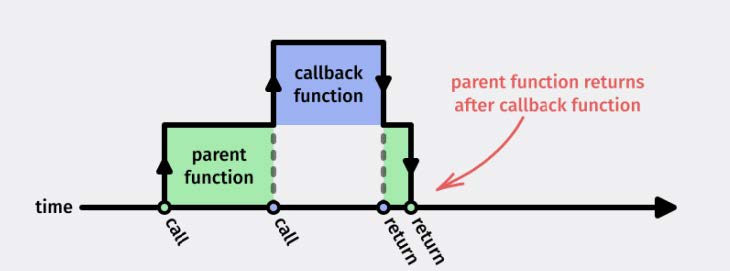
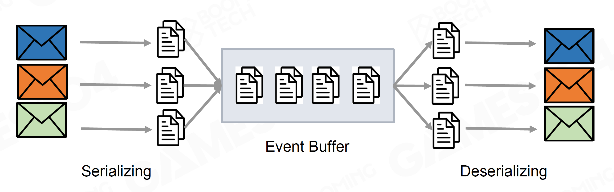
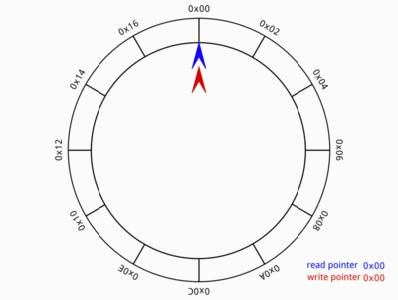
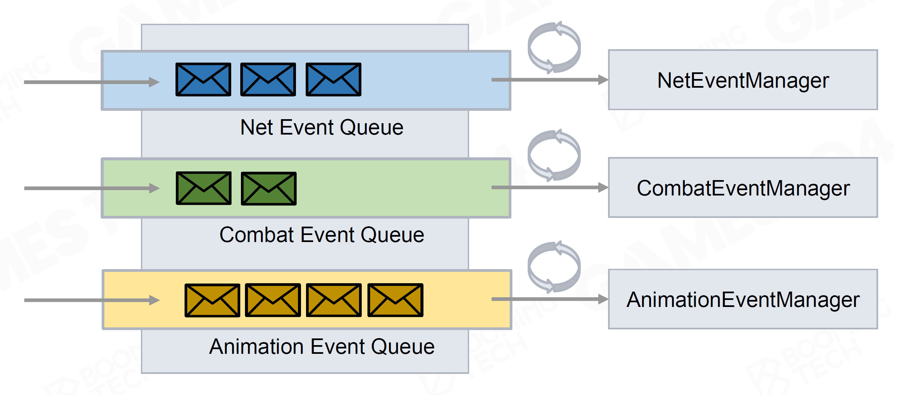
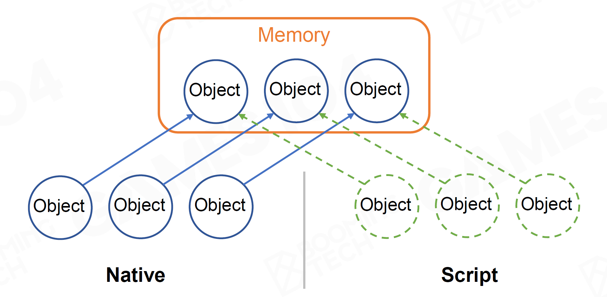
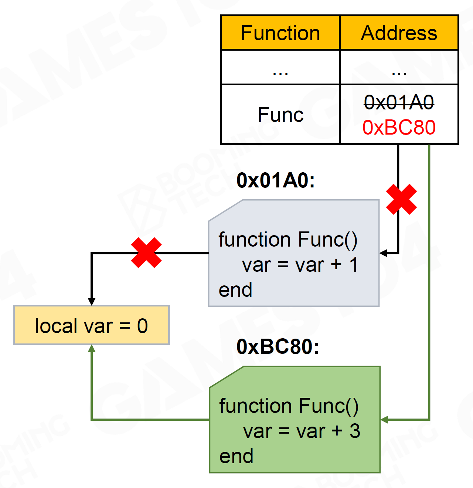
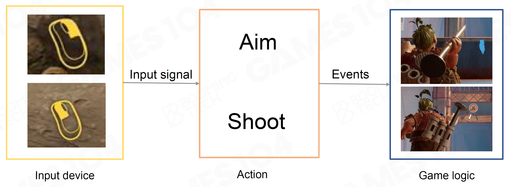

Lecture15 Gameplay Complexity and Building Blocks
Overview
- Gameplay的挑战
- 多个系统之间的合作
- 同一个游戏中Gameplay的多样性
- 快速迭代
Event Mechanism
- Hard Code写在函数中：无数的if/else、非常难以修改
- Event/Message Mechanism：GO之间的“通讯协议”
Publish-subscribe Pattern 发行-订阅设计模式
- Event Definition 信息的定义
- 方法1：Event作为类设计 -> 不适合交给设计师修改
- 方法2：允许定义任意的Event
- 再通过代码渲染系统编译，但每次修改都需要重新编译过于麻烦
- 在引擎核心代码之外定义
- dll注入
- 用脚本层语言实现
- Callback Registration 响应注册
- 注册和调用不在同一处 –> 对象的生命周期和回调函数安全性问题
- Strong Reference 强引用：引用关系绑定
- Weak Reference 弱引用：引用关系弱，可手动进行逻辑判断，使用较多
- 注册和调用不在同一处 –> 对象的生命周期和回调函数安全性问题
- Event Dispatching 信息分发
- 遍历每个GO，逐个分发调用函数 —— 效率过低
- Immediate：发送消息立即调用函数
- 会打断前一任务，等待Callback执行后再继续 
- 单次打断引发连锁Callback，易导致Callstack非常深，难以Debug
- 难以并行
- Event Queue
- 把Event存储至队列，依次执行
- Event Queue的序列化和反序列化  实现：利用反射，获取每个对象的描述结构
- 存储结构：Ring Buffer 不用重复申请新内存 
- Batching，将多个独立系统分开处理 
- 问题：
- 无法保证多个系统间的执行顺序 => 保留一定的Immediate处理能力 同时具备Pre、Post、Immediate处理方式
- 有系统延迟，削弱动作游戏打击感 => 经常Hardcode绕过Delay
- Event Definition 信息的定义
Script System
- Game Logic
- 直接在游戏引擎代码内，使用编译语言编写 （C/C++）
- 每次修改Gameplay，需要重新编译游戏引擎
- 极难支持热更新
- 对设计师极不友好
- 脚本语言 Script System
- 支持快速迭代
- 易于学习、编写
- 支持热更新
- 沙盒运行，稳定、更少Crash
- 直接在游戏引擎代码内，使用编译语言编写 （C/C++）
- 如何运行
- 基于虚拟机
- Script Text -> [Compiler] -> Bytecode [Virtual Machine]
- 速度略慢
- 如何管理GO

- 强调效率：引擎内核管理，脚本触发引擎执行
- 编写难度大
- 执行过程非常复杂
- 直接交给脚本系统管理
- 脚本如何处理GO的生命周期：GC, Garbage Collection
- 优势：不需要手动管理对象生命周期，自动处理
- 问题：每次需要扫描内存，处理效率低
- 脚本如何处理GO的生命周期：GC, Garbage Collection
- 对于玩法相对简单的单机游戏，大多交给引擎管理； MMORPG等玩法非常复杂的游戏，大多脚本系统管理
- 强调效率：引擎内核管理，脚本触发引擎执行
- 架构
- 引擎调用脚本 eg. UE / Unity
- 脚本包引擎，引擎相当于一系列SDK库，目前应用相对少
- 热更新
- 直接修改对应位置的脚本 
- 可能会导致Crash
- 需要保障鲁棒性
- 脚本语言的问题
- 弱类型语言难以编译优化
- 需要虚拟机运行
- JIT，一边解释执行一边编译，可以优化
- 根据情况选择脚本语言
- Lua 轻量，效率高，缺少拓展
- Python 支持反射，面向对象，丰富的拓展库，虚拟机较重
- C# Mono等库/.NET官方支持，将原生编译语言变成脚本语言
Visual Script
- eg. UE Blueprint, Unity Visual Script
- 对设计师和艺术家更友好
- 作为编程语言的要素：
- Variable 变量
- Statement and Expression 声明和表达式
- Control Flow 控制语句
- Function 函数
- Class 类（对于面向对象的语言）
- 可视化Debug
- 问题：
- 多人编辑的Merge问题
- 复杂度高后难以阅读
- Visual Script和脚本本质同类 Script Graph -> Graph Compiler -> Bytecode -> Virtual Machine
Character, Control and Camera
Character
- Movement
- Idle, Start, Walk, Accelerate, Run, Brake, …
- 与环境交互 Hanging, Skating, Diving, …
- 与其它系统互动
- 基于物理的运动
- Movement State Machine 状态机
- Skills
- …
Control
- 不同的输入设备，输入设备 -> 游戏逻辑 
- Zoom in and out
- Aim Assist 吸附操作等（尤其主机游戏）
- Feedback 力反馈、声音反馈、光效反馈、…
- Context Awareness 不同的游戏片段，输入响应不同
- Chord & Key Sequences 按键触发、多个按键序列触发
Camera
- 基础：POV和FOV Point of View, Field of View
- 相机绑定
- Spring Arm
- Camera Track
- Camera Effect
- Camera Manager 多相机管理，视角切换等 eg.枪械瞄准、赛车
- Subjective Feelings 强调主观感受
引擎针对3C系统要公开足够多的接口到 Script / Visual Script 提供给设计师、艺术家